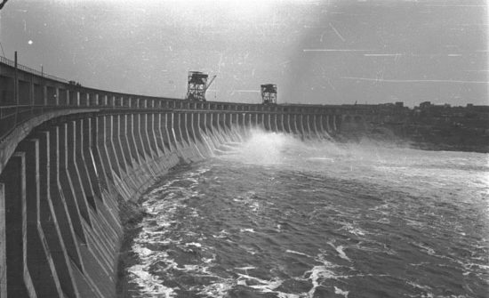
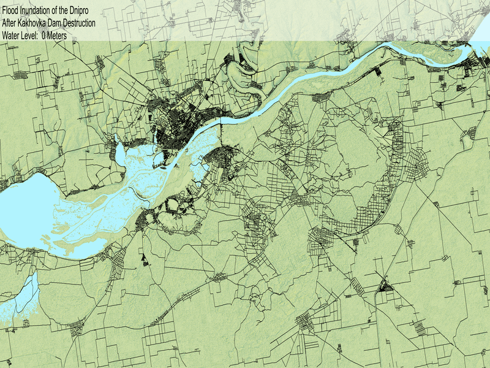

library(tidyverse)
# GIS packages
library(elevatr)
library(rayshader)
library(sf)
library(raster)
library(leaflet)
library(osmdata)
# Make GIFs
library(gifski)
dms_to_dec <- function(deg=0, min=0, sec=0) {
return(deg + min / 60 + sec / 3600)
}
kh_loc <- data.frame(lat = c(dms_to_dec(46,51,00),dms_to_dec(46,18,00)),
lon= c(dms_to_dec(32,09,00),dms_to_dec(33,25,00)) )Kakhovka Dam Disaster
Animate Flood Inundation Along the Dnipro River
Some History
The war in Ukraine has spawned yet another disaster, the destruction of the dam across the Dnipro river, upstream from Kherson City. This is an ecologial and humanitarian disaster as vast acres of settlements, farmlands and wetlands have been destroyed.
This marks the third time a dam in this region has been destroyed. First in 1941, the Soviets blew up a dam to impede the advancing Germans in southern city of Zaporizhzhia, upstream of the present dam. Tens of thousands of peopole were killedd among Ukranians and Red Army soldiers (not Germans). The Germans repaired it. Then, in 1943, the Germans blew it up again to thwart the advancing Soviets.

Ironically, just as the destruction of the Kakhovka dam is an ecological tragedy, so too, was its construction. Many settlements and wetlands were submerged as the Dnipro river backed up.
Visualizing the Disaster
As water surged through the gap where the dam used to be, water levels surged downstream. This was a rolling disaster, with the river delta where the river meets the Black Sea seeing the flow last. We can make a rough attempt to visualize the effect of the rising water with an animated inundation map. This is a pretty sophisticated undertaking…or it used to be. Fortunately, there are tools in the form of R packages that have been developed in the last several years that make it easy for anyone to make inundation maps. There are many pieces of the project below where I can not believe how few lines of code are needed.
Let’s go.
Load the Region of Interest.
As usual, we load the required packages. Then I just looked at Google Maps to find the coordinates of a region spanning from the Kakhovka dam in the east to the Dnipro delta in the west. Since they were displayed in degrees, minutes and seconds, I wrote a quickie function to convert them to decimal. Note that longitude west of zero and latitude south of zero are expressed as negative, neither of which is true here. Longitudes in the United States, for instance, have a negative sign.
Here is the first “wow, that was easy” moment. We can confirm our coordinates by quickly pulling in a map with multiple layers, one for geographic names, and one for the satellite image. This is done with the leaflet package.
leaflet() |>
fitBounds(kh_loc$lon[1],kh_loc$lat[1],kh_loc$lon[2],kh_loc$lat[2]) |>
addProviderTiles(providers$Esri.WorldImagery) |>
addProviderTiles(providers$CartoDB.PositronOnlyLabels,
options = providerTileOptions(opacity = 1))This is an interactive map. We can pan and zoom to our heart’s content. There are some interesting observations we can make. The dam is at the northeast corner of the image. We can see the swampy lowlands below the dam. They lie mainly to the south of the primary course of the river. Notice the crop circles to the east and south of the reservoir. There are many visible if we pan a bit to the east. This tells us that the crops grown there are irrigated by water pumped to center-pivot sprinkler systems. Presumably the water comes from the reservoir which is now disappearing. Just to the east of the dam we also see the Crimean canal stretching south, which is a major source of fresh water for the Crimean peninsula. This, too, will cease to function.
Modeling the Effects of the Disaster
We are interested in modeling which parts of the river basin got submerged after the destruction of the dam. Obviously we need to know the elevation of the land. Using the elevatr package it only takes one line of code to retrieve a topographic map from the OpenTopography data set. This gets us a raster object that contains a matrix with elevations at each point. It also contains metadata with the coordinate system.
kherson_dnipro <- kh_loc |>
st_as_sf(coords = c("lon","lat"),crs = 4326)
# get the topy matrix
#kherson_elev <- get_elev_raster(kherson_dnipro, src = "gl1", clip = "bbox")
#save(kherson_elev,file="data/kherson_elev.rdata")
load(file="data/kherson_elev.rdata")
kherson_elevA quick and dirty plot of the matrix shows the flood situation. Bright green is high ground. The color scale is in meters above sea level. South of the river are mostly very low-lying areas. Notably, these areas are Russian controlled today. The north side is in Ukrainian hands.
pal <- colorRampPalette(c("darkblue","limegreen"))
plot(kherson_elev, col = pal(10))Now let’s create a more realistic view of the ground and show the rising water. To do this we’ll use the rayshader package. When Tyler Morgan-Wall released this package a few years ago, it opened up huge visualization vistas to the R community. We will just be touching the surface of its capabilities here. We’ll use two key features, the ability to shade the surface for a 3D effect and to detect and color bodies of water. Let’s exaggerate the z-axis a bit since this is generally very flat ground and we want to see subtle terrain changes. Like the ggplot2 package, we can start with a base plot and add layers.
kh_elmat <- raster_to_matrix(kherson_elev)
base_map <- kh_elmat|>
sphere_shade(texture = "imhof1",zscale = .8)
base_map |>
add_water(detect_water(kh_elmat),color="desert") |>
plot_map()We can clearly see the reservoir in the east, the delta in the west, the (exaggerated) canyons carved by the Dnipro tributaries and the narrow river connecting them.
What we don’t see is where the people are but this tragedy is very much a human one. We can get a sense of human presence by creating a road overlay using OpenStreetMap data. Again, the code needed to do this is trivially simple. Note the object returns has several layers but we are only interested in the osm_points.
# kherson_roads <- osmdata::opq(st_bbox(kherson_dnipro)) %>%
# osmdata::add_osm_feature("highway") %>%
# osmdata::osmdata_sf()
#
# save(kherson_roads,file="data/kherson_roads.rdata")
load(file="data/kherson_roads.rdata")
# Take just the road layer and transform coordinates to our existing projection
kherson_lines <- sf::st_transform(kherson_roads$osm_lines,
crs = raster::crs(kherson_dnipro))
kherson_roadsOnce again we do a quick and dirtly plot to visualize the new layer.
# View streets as a ggplot2 render
ggplot(kherson_lines, aes(color = osm_id)) +
geom_sf() +
theme(legend.position = "none") +
labs(title = "Kherson Roads from Open Street Map")When we put it all together, what do we get?
base_map |>
add_water(detect_water(kh_elmat), color = "desert") |>
add_overlay(
generate_line_overlay(
kherson_lines,
heightmap = kh_elmat,
extent = extent(extent(kherson_dnipro)),
linewidth = 2
)
) |>
plot_map()We can see the city of Kherson on the north side, the settlements on the south side, mostly out of the swampy areas along the river and the town of Nova Kakhovka where the dam and hydroelectric station were.
Using this as a base, let’s create a function that shows the impact of rising water levels. Rayshader will color totally flat areas as water so we mimic rising water by setting the elevations of any point below the rising water level to zero. We can iterate by setting the water level higher and higher to put more of the land “under water.”
At this point we should be clear about what this is and isn’t. The method we use here more properly would model rising sea levels. We don’t know exactly how the water affected each area at what time. We don’t know what the peak inundation level was for each area. Further, once the reservoir empties out, the water will recede. Let’s call this a “dramatization.” This does give a dramatic view of the scope of the destruction.
The function below will render a view of our map with a water level rise of zero though ten meters. Again, this doesn’t assume the water rose ten meters, only that it reached ten meters above sea level. That means a one meter rise for land at a nine meter elevation. We save each frame as a single image.
plot_rising_water <- function(water_level = 0) {
flood_elmat <- ifelse(kh_elmat < water_level, 0, kh_elmat)
base_map |>
add_water(detect_water(flood_elmat), color = "desert") |>
add_overlay(
generate_line_overlay(
kherson_lines,
heightmap = kh_elmat,
extent = extent(extent(kherson_dnipro)),
linewidth = 2
)
) |>
save_png(
filename = paste0("frames/kakhovka/flood_", formatC(water_level, width = 3, flag = "0"), ".png"),
title_text = paste0(
"Flood Inundation of the Dnipro\nAfter Kakhovka Dam Destruction\nWater Level:",
formatC(water_level, width = 3, flag = " "),
" Meters"
),
title_size = 60,
title_bar_color = "white"
)
}# -----------------------------------------------------------
# generate frames
0:10 |> walk(plot_rising_water)
# make GIF
target_dir <- "frames/kakhovka"
fnames <- paste0("frames\\kakhovka\\", dir("frames/kakhovka"))
# add a pause at beginning and end by repeating frames
fnames <- c(rep(fnames[1],5),fnames,rep(fnames[length(fnames)],5))
gifski(fnames,"frames/flood.gif",delay = 1/5,loop = TRUE)
My Speculation
It’s irrelevant to our project today but as of this writing, we don’t know for sure who blew up the dam. I certainly don’t but I will make a couple observations. The dam is under Russian control and it looks like the explosion came from inside the structure. The Ukrainians control the Zaporizhzhia, dam and there has been no talk of blowing it up. As we saw in WWII, both sides blew up dams to impede enemy advancement. There is one side that is advancing today and it’s the Ukrainians. Finally, this potentially has one benefit for the Ukrainians by cutting the fresh water canal to Crimea, but they could have destroyed the canal and prevented the Russians from rebuilding it without blowing the dam. We shall see in the fullness of time.
Now You Try
Here we will be modeling the disaster in Ukraine but you might use these techniques to visualize the risk of flooding where you are considering buying a house, for example.
Stream gauge data